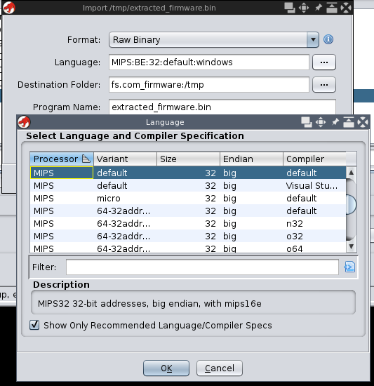
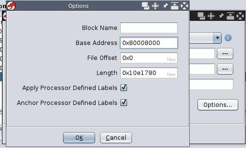
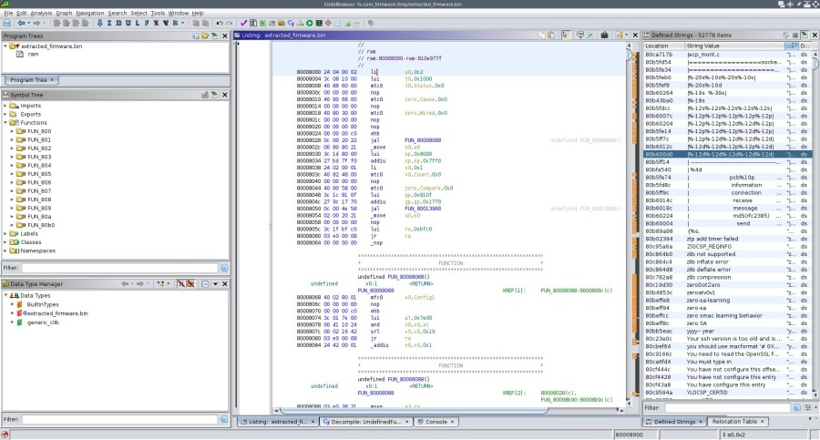
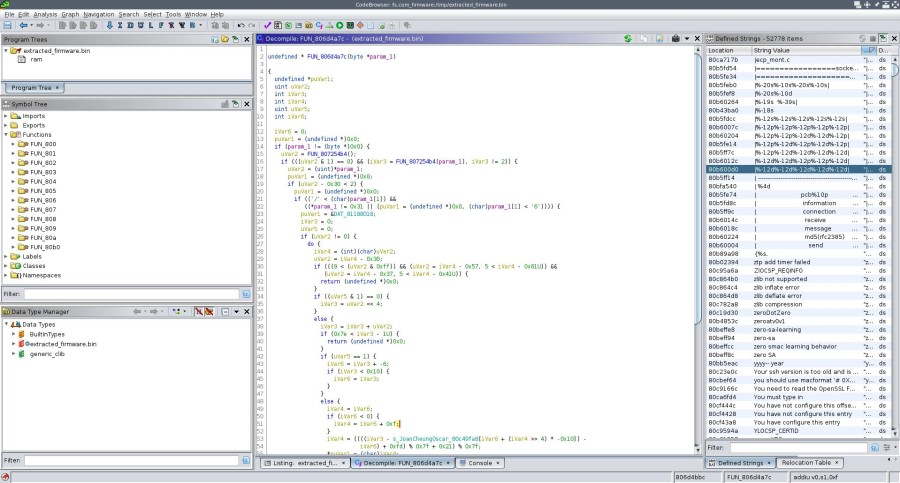
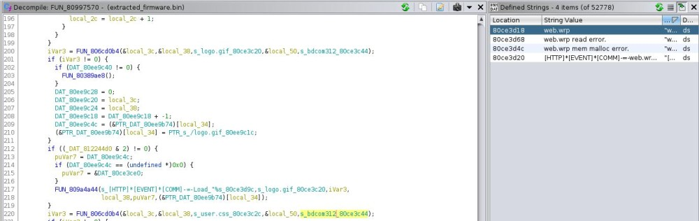

Reversing Firmwares from FS and BDCOM Switches
I recently had to buy a new 24x1G fanless switch for my home network. I had a mikrotik switch for years (which i was happy with but suffered a power surge) and wanted to try something new so I ended up with a FS S3700-24T4F.
Their CLI is close to Cisco’s IOS, it’s overall a fun device for home network and not too expensive. Found few small bugs here and there without really looking for them but in the end nothing too annoying in my context.
Looking at the form factor and the number of BDCOM reference in the firmware, it’s most likely a rebranded BDCOM S2528-C.
1. Scope
The following seems applicable to most BDCOM switches and to FS S3150, S3260, S3400 and S3700 (rebranded BDCOM ?) This is not a full analysis of the firmware, but that should be enough information to easily get started with reversing them.
2. First look
You can either get the firmware straight from the switch via TFTP (i had issue with SCP) or from their websites:
- BDCOM: https://sites.google.com/bdcom.cn/international/download/firmware/switch
- FS: https://img-en.fs.com/file/user_manual/poe+-series-switches-fsos-v2-2-0d-a79995-software.zip
There’s usually 2 files:
Switch#dir
Directory of /:
1 Switch.bin <FILE> 4352907 THU JAN 01 00:02:10 1970
0 web.wrp <FILE> 30740 THU JAN 01 00:02:13 1970
Switch.binis the actual firmwareweb.wrpis a password protected rar containing some branding/customs for the web interface
% file Switch.bin web.wrp
Switch.bin: data
web.wrp: RAR archive data, v2.0, os: Win32
% unrar l web.wrp
UNRAR 6.10 beta 2 freeware Copyright (c) 1993-2021 Alexander Roshal
Archive: web.wrp
Details: RAR 4
Attributes Size Date Time Name
----------- --------- ---------- ----- ----
* I.A.... 660 2021-01-08 15:17 cn.png
* I.A.... 674 2021-01-08 15:17 en.png
* I.A.... 52920 2021-01-08 15:17 extipaclitem.asp
* I.A.... 824 2021-01-08 15:17 footer.asp
* I.A.... 1795 2021-01-08 15:17 icon.png
* I.A.... 1141 2021-01-08 15:17 index.asp
* I.A.... 37192 2021-01-08 15:17 logo.asp
* I.A.... 1057 2021-01-08 15:17 logo.gif
* I.A.... 2594 2021-01-08 15:17 nav.png
* I.A.... 36188 2021-01-08 15:18 navbar.asp
* I.A.... 9753 2021-01-08 15:17 nav_style.css
* I.A.... 3899 2021-01-08 15:17 tabctrl.asp
----------- --------- ---------- ----- ----
148697 12
3. Extracting Switch.bin
The Switch.bin has 2 parts.
The first part starts with the magic “BDCO\x00” and possibly contains some informations like base address and maybe some code responsible for loading the rest of the firmware (unconfirmed).
The 2nd part starts at offset 0x2030 and is identified by a “SYS\x00” marker. At offset 0x2040 is a rar file.
% hexdump -C Switch.bin | more
--- 1st part ---
00000000 42 44 43 4f 00 00 00 03 80 00 80 00 80 00 80 00 |BDCO............|
00000010 00 40 16 a2 00 00 20 40 02 02 00 44 07 e5 00 02 |.@.... @...D....|
00000020 05 0e 19 0f ee 3f 5a 73 00 00 00 00 00 00 00 02 |.....?Zs........|
00000030 00 02 1e fd 00 02 8c 12 00 02 78 c9 00 02 e8 92 |..........x.....|
00000040 00 02 ba 94 00 02 45 f6 00 02 c3 5f 00 02 90 f1 |......E...._....|
00000050 00 02 4d d1 00 00 f6 ed 00 00 fc 89 00 00 f8 d9 |..M.............|
00000060 00 02 b5 32 00 02 cd b6 00 02 bd c6 00 02 a4 69 |...2...........i|
00000070 00 02 d5 cf 00 02 0f f2 00 01 a8 41 00 02 e8 cc |...........A....|
00000080 00 01 12 e7 00 01 18 d2 00 02 13 de 00 01 f6 07 |................|
00000090 00 02 2e ba 00 02 7f 17 00 01 1d b7 00 01 6a 1c |..............j.|
000000a0 00 00 ec 16 00 00 6e 61 00 00 e0 3e 00 00 cf 58 |......na...>...X|
000000b0 00 00 c7 e1 00 00 e2 29 00 00 00 00 00 00 00 00 |.......)........|
000000c0 00 00 00 00 00 00 00 00 00 00 00 00 00 00 00 00 |................|
*
00001030 cd 67 79 69 ec a8 3e d3 41 66 81 8c b9 2c 6d 10 |.gyi..>.Af...,m.|
00001040 4a db 4a 70 07 49 f0 fd 88 97 71 06 c1 8f d2 59 |J.Jp.I....q....Y|
00001050 4d 92 e6 b3 fc 3f 46 a6 cc 7d 25 b3 96 b4 41 8d |M....?F..}%...A.|
00001060 c8 8d a7 f6 94 54 80 86 b3 47 aa ff a8 dc 73 09 |.....T...G....s.|
00001070 f5 60 4e 8c 00 00 00 00 00 00 00 00 00 00 00 00 |.`N.............|
00001080 00 00 00 00 00 00 00 00 00 00 00 00 00 00 00 00 |................|
*
--- 2nd part ---
00002030 53 59 53 00 00 00 00 00 00 00 00 00 00 00 00 00 |SYS.............|
--- RAR file ---
00002040 52 61 72 21 1a 07 00 cf 90 73 00 00 0d 00 00 00 |Rar!.....s......|
00002050 00 00 00 00 e0 8d 74 80 80 25 00 c4 1e 02 00 00 |......t..%......|
00002060 00 08 00 02 53 ed 8e e8 28 73 45 52 14 33 05 00 |....S...(sER.3..|
While this is true for most the files i could get my hands on, some of them like FSOS_2.2.0D_75857.bin are different:
- no rar file at 0x2040
- 1st part contains more data (i mean less NULL bytes) hence my previous assumption about the first part of the bin file.
the following will split the first part and the rar file:
#!/usr/bin/env python
import sys
with open(sys.argv[1], "rb") as fp:
with open('out_1.bin', 'wb') as fp_out:
fp_out.write(fp.read(0x2030))
assert fp.read(16) == b'SYS\x00' + b'\x00'*12
with open("out_2.bin", "wb") as fp_out:
fp_out.write(fp.read())
% ./extract.py Switch.bin
% unrar l out_2.bin
UNRAR 6.10 beta 2 freeware Copyright (c) 1993-2021 Alexander Roshal
Archive: out_2.bin
Details: RAR 4
Attributes Size Date Time Name
----------- --------- ---------- ----- ----
..A.... 524288 2021-02-05 14:25 .temp
..A.... 524288 2021-02-05 14:25 .temp
..A.... 524288 2021-02-05 14:25 .temp
..A.... 524288 2021-02-05 14:25 .temp
..A.... 524288 2021-02-05 14:25 .temp
..A.... 524288 2021-02-05 14:25 .temp
..A.... 524288 2021-02-05 14:25 .temp
..A.... 524288 2021-02-05 14:25 .temp
..A.... 524288 2021-02-05 14:25 .temp
..A.... 524288 2021-02-05 14:25 .temp
..A.... 524288 2021-02-05 14:25 .temp
..A.... 524288 2021-02-05 14:25 .temp
..A.... 524288 2021-02-05 14:25 .temp
..A.... 524288 2021-02-05 14:25 .temp
..A.... 524288 2021-02-05 14:25 .temp
..A.... 524288 2021-02-05 14:25 .temp
..A.... 524288 2021-02-05 14:25 .temp
..A.... 524288 2021-02-05 14:25 .temp
..A.... 524288 2021-02-05 14:25 .temp
..A.... 524288 2021-02-05 14:25 .temp
..A.... 524288 2021-02-05 14:25 .temp
..A.... 524288 2021-02-05 14:25 .temp
..A.... 524288 2021-02-05 14:25 .temp
..A.... 524288 2021-02-05 14:25 .temp
..A.... 524288 2021-02-05 14:25 .temp
..A.... 524288 2021-02-05 14:25 .temp
..A.... 524288 2021-02-05 14:25 .temp
..A.... 524288 2021-02-05 14:25 .temp
..A.... 524288 2021-02-05 14:25 .temp
..A.... 524288 2021-02-05 14:25 .temp
..A.... 524288 2021-02-05 14:25 .temp
..A.... 524288 2021-02-05 14:25 .temp
..A.... 524288 2021-02-05 14:25 .temp
..A.... 399232 2021-02-05 14:25 .temp
Corrupt header is found
----------- --------- ---------- ----- ----
17700736 34
all files in the archive (except the last) are 0x80000 bytes.
The archive can be extracted using unrar -or which will rename conflicting filenames
% unrar -or x out_2.bin
UNRAR 6.10 beta 2 freeware Copyright (c) 1993-2021 Alexander Roshal
Extracting from out_2.bin
Extracting .temp OK
Extracting (1).temp OK
Extracting (2).temp OK
[...]
Extracting (33).temp OK
Corrupt header is found
Total errors: 34
all that’s left to do now is to concatenate all the extracted files:
% mv .temp \(0\).temp
% for x in $(seq 0 33); do cat \($x\).temp >> extracted_firmware.bin; done
% ls -h extracted_firmware.bin
17M extracted_firmware.bin
4. Disassembling
According to the datasheet, the switch runs on a Realtek RTL8382M SoC and a MIPS 4kEC processor.
The base address is 0x80008000.
It can be obtained from the switch with the show version command:
Switch#show version
Fiberstore Co., Limited Internetwork Operating System Software
S3700-24T4F Series Software, Version 2.2.0D Build 80921, RELEASE SOFTWARE
Copyright (c) 2019 by FS.COM All Rights Reserved
Compiled: 2021-2-5 14:25:15 by SYS, Image text-base: 0x80008000 <----- HERE
ROM: System Bootstrap, Version 0.5.2,hardware version:A
i suspect it’s also in the 1st part of the Switch.bin file:
% hexdump -C Switch.bin| head -1
00000000 42 44 43 4f 00 00 00 03 80 00 80 00 80 00 80 00 |BDCO............|
| here? | | or here?|
It loads fine in Ghidra:
- langage: MIPS:BE:32:default:default
- base address: 0x80008000


From there everything is smooth.

even the decompiler works quite fine:

5. Quick Analysis For Fun
5.1 Decrypting Type 7 Passwords
By default, passwords are in clear text in the config, however you can change that by using service password-encryption.
I made a tool to decrypt/encrypt such passwords, which is available here.
5.2 web.wrp
Since all strings references are correct, if we search for web.wrp we see it’s only referenced in a single function.
Doesn’t take much work from here to figure the password for the rar file is bdcom312

% unrar x -pbdcom312 ../web.wrp
UNRAR 6.10 beta 2 freeware Copyright (c) 1993-2021 Alexander Roshal
Extracting from ../web.wrp
Extracting cn.png OK
Extracting en.png OK
Extracting extipaclitem.asp OK
Extracting footer.asp OK
Extracting icon.png OK
Extracting index.asp OK
Extracting logo.asp OK
Extracting logo.gif OK
Extracting nav.png OK
Extracting navbar.asp OK
Extracting nav_style.css OK
Extracting tabctrl.asp OK
All OK
5.3 HTTP Server
It uses GoAhead-Webs version 2.1.8 which is a popular http server for embedded devices.
This particular version can be found here.
There’s an ASP style server page.
All ASP functions are registered like this:
void ASP_register_all_functions(void)
{
ASP_register_one_func(s_aspGenerateWebTitleInfoJS_80ce14c8,FUN_809a4bd0);
ASP_register_one_func(s_aspGenerateAboutInfoJS_80ce14e4,FUN_809a4de0);
ASP_register_one_func(s_aspGenerateWebParamsJS_80ce14fc,FUN_8095d068);
ASP_register_one_func(s_aspGenerateUserPrivilegeJS_80ce1514,FUN_8096c908);
ASP_register_one_func(s_aspGenerateRingInterfaceInfoJS_80ce1530,FUN_8097f680);
ASP_register_one_func(s_aspGenerateInterfaceInfoJS_80ce1550,FUN_80964138);
ASP_register_one_func(s_aspGenerateSystemStateJS_80ce156c,FUN_8095d24c);
ASP_register_one_func(s_aspGenerateRangeOfVariableJS_80ce1588,FUN_8095d700);
ASP_register_one_func(s_aspGenerateUMJS_80ce15a8,FUN_8095d758);
ASP_register_one_func(s_aspGenerateFunctionGobackUrlJS_80ce15b8,FUN_8095deb0);
// [...]
ASP_register_one_func(s_aspGenerateDhcpdIPBindInfoJS_80ce2e1c,FUN_80980c58);
ASP_register_one_func(s_aspGenerateAccessRestrictInfoJS_80ce2e3c,FUN_8098c904);
return;
}
The same with all forms actions:
void http_register_all_goform_funcs(void)
{
http_register_one_goform_func(s_formTest_80cd9c5c,http_asp_formTest);
http_register_one_goform_func(s_langform_80cd9c68,&LAB_8092cb9c);
http_register_one_goform_func(s_WebAdminDelete_80cd9c74,&LAB_8092d4c4);
http_register_one_goform_func(s_WebAdminConfig_80cd9c84,FUN_8092d790);
http_register_one_goform_func(s_SysClockConfig_80cd9c94,&LAB_8092dca0);
http_register_one_goform_func(s_BackupFirmware_80cd9ca4,FUN_8092e37c);
http_register_one_goform_func(s_UpdateFirmware_80cd9cb4,FUN_8092e400);
http_register_one_goform_func(s_BackupConfigFile_80cd9cc4,FUN_8092e540);
http_register_one_goform_func(s_UpdateConfigFile_80cd9cd8,FUN_8092e5ac);
// [...]
http_register_one_goform_func(s_RestoreConfigFile_80cd9cec,FUN_8092e898);
http_register_one_goform_func(s_RebootDevice_80cd9d00,FUN_8092e7cc);
http_register_one_goform_func(s_CustomerinfoRestoreConfig_80cdaa68,FUN_8092f858);
http_register_one_goform_func(s_AccessRestrictConfig_80cdaa84,&LAB_8093dc90);
return;
}
The HTTP code is easy to follow, especially with the source code next to it…
6. Debugging
It’s possible to enable core dump (core_dump enable) and read core files with show break (should you crash the switch :-):
Switch#show break
=========================================================
BreakNum: 1
Exception Type:2-TLB miss exception (load or instruction fetch)
TaskID=826380b0, TaskName=HTTD
date: 2021-8-25 time: 17:13:23
zero at v0 v1
00000000 811c0000 00000016 00000af2
a0 a1 a2 a3
80cdd9f4 00000000 8099d5fc 00000000
t0 t1 t2 t3
00000000 1000fc00 1000fc01 00005000
t4 t5 t6 t7
00000140 00000002 02beff43 00000000
s0 s1 s2 s3
80cdab10 00000000 0000003c 86b591f0
s4 s5 s6 s7
87a18b78 00000000 00000000 00000000
t8 t9 k0 k1
00000001 0000006e 00000000 00000000
gp sp s8 ra
810f1770 82637240 00000000 80972600
pc
80725134
sr = 1000fc01
cause = 10000008
call procedure--
0x80972600--
0x80994e40--
0x80993ed0--
0x80993aa8--
0x80993984--
0x8099f718--
0x809931d4--
0x809a6b60--
0x809a86c0--
0x8099ba18--
0x8099b4bc--
0x809a5f20--
Stack:
82637240: fae33ffe 9e5bcec9 b3ebb644 fdfde7cd
82637250: 7729ed3a e11a6f6c bfedd7ed dfbf7a36
82637260: 93fdb2ee 9d89f697 ce5fc7f7 25edf589
82637270: f3afedaf a1799781 70fbad55 97e1f55c
82637280: 575ea857 b5b7fc8f 9ebcdbcd c8cd5ec1
82637290: f5cd6dd4 cf4bbb37 b7b08cdd de356661
826372a0: fff16cc7 28fbf9f9 aeb6a6ee ffefbf7b
826372b0: 905ff665 ded9bb9b 599b9ae9 2bfefbdf
826372c0: 75c3a5ed b5d7af7f ddbdf119 932f7837
826372d0: f4ffefaf fef72ff5 fcbf7ddd cd9bd338
826372e0: 6db5eff9 99a2e9f3 a5a6176c eda7f721
826372f0: b1f2b951 ef5c7f2f 3feba1a5 ed39efe5
82637300: c8b7bbf7 cf5968ca f599dfff ff771587
82637310: 7bc7927b fdb8bfea b7d8b725 945e0666
82637320: d87bd1bd a0faa875 00000000 1000fc01
It’s also available in the file flash:SYS_CORE_DUMP
Happy reversing.